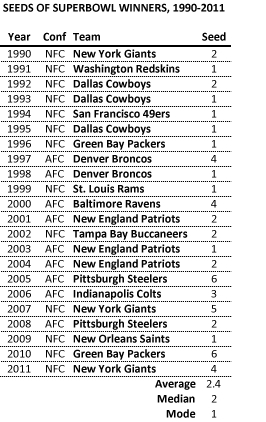
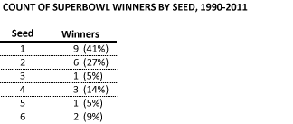

How important is seeding to NFL playoff success?
Originally published on the Mass. Numbers Blogger site on 2013-01-09.
A one or two seed has won the Superbowl 68% of the time since 1990
I am taking a brief respite from Massachusetts political analysis to consider something completely different: how predictive is an NFL team’s playoff seeding in determining how far the team advances in the playoffs? And from from a Massachusetts point of view, what does the number two seed of the New England Patriots tell us about the chances of Bill Belichick and Tom Brady winning a fourth Championship title?
I have compiled the playoff seeding and results for the 22 seasons since the NFL moved to a 12 team playoff system to help answer these questions. While there was a switch from 3 division winners to 4 division winners in 2002, the basic playoff structure has remained the same since 1990. The 6 playoff teams in each conference (the AFC and the NFC) are seeded 1 through 6, ostensibly the best through the worst, with seeds 3 through 6 playing in a Wildcard round. The winners of the Wildcard round play seeds 1 and 2 in the Divisional Round. The Divisional winners subsequently play in a Conference championship game, which determines the team from the AFC and the team from the NFC that will meet in the Superbowl.
The NFL playoff system is structured to give multiple advantages to the higher seeded teams. Advantages include automatic advancement of the top two seeds past the Wildcard round, home field advantage for the higher seeded team in each round, and the highest seeded teams getting to play against the lowest seeded/not-as-challenging teams. I will look at how well teams at various seeding levels have done historically.
A preview: about two-thirds of all Superbowl winners since 1990 have been 1 or 2 seeds, and only one three-seed and one five-seed have won the Superbowl in that time period. Top-seeded teams have won 9 Superbowls (41%), two-seeds 6 (27%), and there have been 7 Superbowl wins for all of the other seeds combined. The Patriots chances against the Texans in the Divisional round on Sunday are good, but a win in the Conference championship game against Peyton Manning and the Denver Broncos is much less likely.
The relationship between playoff advancement and seed
The following chart looks at the highest round reached by teams from each of the six NFL playoff seeds since 1990. It reflects 44 teams in each seeding level, 1 in each of the AFC and NFC, for each of the 22 seasons from 1990-2011.

The number and percentage in each position represents the number of teams with a particular seed that were eliminated in the row’s playoff round—the Championship line implies a Superbowl win.
Let’s look individually at the seeds, starting with the top-seed. There is a fairly even distribution among the elimination rounds for the one-seeds since 1990. Thirty percent were eliminated in the Divisional round, 23 percent in the Conference final, and 27 percent made it to the Superbowl, but then lost. Twenty percent, or 9 teams made it to Superbowl and won in these 22 playoff seasons.
Of the 44 second seeds, 75% were eliminated in the Divisional or Conference rounds, compared to only 53% of the top seeded teams. The second seeds have faired particularly badly in the Conference championship round with 22 teams being eliminated, more than twice as many as the 10 one-seeds. One possible explanation could be the home-field of advantage enjoyed throughout the playoffs by the top-seeded teams.
It is surprising that only one three-seed has won the Superbowl since 1990, the 2006 Indianapolis Colts who defeated the top-seeded Chicago Bears. There has also been only one 5 seed to win the Superbowl during this time period, the 2007 New York Giants who defeated the top-seeded New England Patriots with David Tyree’s heartbreaking one-handed catch against his helmet with seconds left in Glendale, Arizona. Every 5 and 6 seed (there were only three) that made it to the Superbowl since 1990 has won the ultimate NFL game. The four-seed has faired particularly well compared to the three-seed with 6 teams making it to the Superbowl and three winning the Championship game.
The Wildcard round is the most brutal. While seeds 1 and 2 automatically advance, a third of the teams are eliminated and the majority of 5 and 6 seeds (68% of 5 seeds and 64% of 6 seeds) have historically been eliminated in that round.
Seeding of the Superbowl Champions
Let’s look directly at the seeding of the 22 Superbowl champions since 1990.

The average seed of the Superbowl champions is 2.4 and the median seed is 2. The mode (value that occurs most often) is 1, with 9 of the champions having a top seed, compared 6 second-seeded teams, 1 third-seeded team, 3 four-seeded teams, 1 five seed, and 2 sixth seeds.

A top-seeded team has won the Superbowl 41% of the time, and 1 or 2 seed has won the Championship 68% of the time. Two bottom-seeded teams have won the Superbowl since 1990, the 2005 Pittsburgh Steelers (against the top-seeded Seattle Seahawks) and the 2010 Green Bay Packers (against the second-seeded Pittsburg Steelers).
What do the New England Patriots chances look like?
Obviously, the Patriots gained a significant advantage when they defeated the Miami Dolphins in the last week of the regular season, combined with the Houston Texans loss to the Indianapolis Colts. This combination of events gave the Patriots a 2 seed, and dropping the Texans to the 3 seed. The Patriots got to rest an additional week, while also giving Bill Belichick an extra week of game film to analyze and scheme against the Texans for their Sunday matchup. Historically speaking, three-seeds have performed particularly poorly in the playoffs—84% of three-seeds have been eliminated in either the Wildcard or Divisional rounds, and only two have made it to the Superbowl. Having the two-seed compared to the three-seed turns out to be a really big deal.
The Patriots are 9.5 point favorites in Sunday’s game against the Texans. They have home field advantage and soundly defeated the Texans 42-14 on December 10 in a Monday Night Football blowout. However, Patriots fans are unlikely to forget when their team had a blowout win against the Jets at the end of the 2010 regular season and then lost to the Jets in the Divisional round. That being said, the Patriots are more likely than not to defeat the Texans on Sunday.
The Conference championship is much less predictable. The most likely AFC Conference matchup is the top-seeded Denver Broncos against the second-seeded Patriots. In the 44 NFL Conference championship games since 1990, 22 have been between the top two seeds. In those 22 one-vs.-two match-ups, the top-seeded team has won 14 times (64%) and the two-seed has won 8 times (36%). Even thought the Patriots beat the Denver Broncos in the regular season, Peyton Manning has led his team to 11 straight wins since their 31-21 loss at Gillette Stadium. A Patriots vs. Broncos Conference championship game would also take place in the mile high atmosphere of the Bronco’s home field, another significant disadvantage for the Patriots.
The second seed in the playoffs secured by the New England Patriots puts them in a much stronger position than the lower seed they could have ended up with if the last week of the regular season had gone differently. The Patriots are likely to win their matcup with the Houston Texans on Sunday. But, if they do win against the Texans, their success in the Conference championship round is much less likely, especially if they face the top-seeded Denver Broncos. Historically, the top seed wins two-thirds of the time over the two-seed.